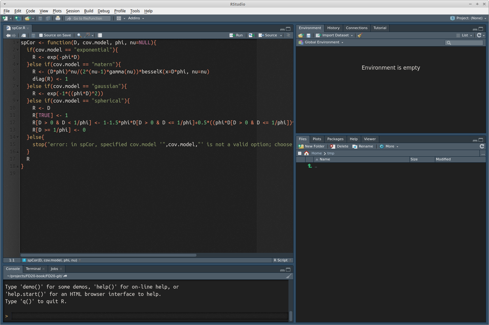
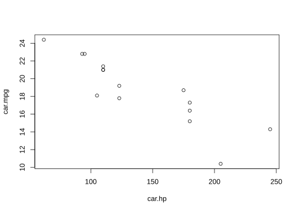

Chapter 1 Introduction to R and RStudio
Various statistical and programming software environments are used in data science, including R, Python, SAS, C++, SPSS, and many others. Each has strengths and weaknesses, and often two or more are used in a single project. This book focuses on R for several reasons:
- R is free
- It is one of, if not the, most widely used software environments in data science
- R is under constant and open development by a diverse and expert core group
- It has an incredible variety of contributed packages
- A new user can (relatively) quickly gain enough skills to obtain, manage, and analyze data in R
Several enhanced interfaces for R have been developed. Generally such interfaces are referred to as integrated development environments (IDE). These interfaces are used to facilitate software development. At minimum, an IDE typically consists of a source code editor and build automation tools. We will use the RStudio IDE, which according to its developers “is a powerful productive user interface for R.”1 RStudio is widely used, it is used increasingly in the R community, and it makes learning to use R a bit simpler. Although we will use RStudio, most of what is presented in this book can be accomplished in R (without an added interface) with few or no changes.
1.1 Obtaining and installing R
It is simple to install R on computers running Microsoft Windows, macOS, or Linux. For other operating systems users can compile the source code directly.2 Here is a step-by-step guide to installing R for Microsoft Windows.3 macOS and Linux users would follow similar steps.
- Go to http://www.r-project.org/
- Click on the
CRANlink on the left side of the page - Choose one of the mirrors.4
- Click on
Download R for Windows - Click on
base - Click on
Download R 4.2.1 for Windows - Install R as you would install any other Windows program
1.2 Obtaining and installing RStudio
You must install R prior to installing RStudio. RStudio is also simple to install:
- Go to http://www.rstudio.com
- Click on the link
RStudiounder theProductstab - Click on the
RStudio Desktopbox - Choose the
DOWNLOAD RSTUDIO DESKTOPlink in theOpen Source Editioncolumn - On the ensuing page, click on the
Installerversion for your operating system, and once downloaded, install as you would any other program
1.3 Using R and RStudio
Start RStudio as you would any other program in your operating system. For example, under Microsoft Windows use the Start Menu or double click on the shortcut on the desktop (if a shortcut was created in the installation process). A (rather small) view of RStudio is displayed in Figure 1.1.

FIGURE 1.1: The RStudio IDE
Initially the RStudio window contains three smaller windows. For now our main focus is on the large window on the left. This is the Console window and it is where you type R statements. The next few sections provide examples of using R statements focusing on small non-complex data sets. Later in the book we’ll work with larger and more complex data sets. Read these sections at your computer with R running, and enter the R commands to become more comfortable using the R console window and RStudio.
1.3.1 Rstudio themes
Figure 1.1 shows the default Rstudio theme and layout. RStudio provides great flexibility in changing themes and code highlighting to customize the RStudio interface. To switch between themes, click on the Tools bar at the top of the window, click on the Global Options tab, and then click on the Appearance tab where you will see the option to switch between three RStudio themes: Modern, Classic, and Sky.
You can also switch the Editor font and specify the Editor theme from a suite of options. We generally find that Editor themes with a dark background and mellow colored syntax highlighting is easier on the eyes. For example, an RStudio window using the Modern theme and the Ambiance Editor theme is shown in Figure 1.2. Note we included example code to illustrate syntax highlighting. Using a dark palette in RStudio is especially useful during long work sessions. If you’re interested in specializing your Rstudio window even further, you can create custom editor themes (see this Rstudio blog for a useful tutorial).

FIGURE 1.2: The RStudio IDE using the Modern theme and the Ambiance Editor theme
1.4 Installing and calling R packages
R, as with other programming languages, uses functions for performing different tasks. In R, functions are stored and shared in units referred to as packages. When R is installed, you can access bundled packages (e.g., base, graphics) that provide access to a suite of functions capable of performing a range of tasks. Whenever you open R, these packages automatically load and you can immediately start to use the functions they contain.
While functions in the base installation of R (often referred to as base R) are useful, we’ll often use packages written by other R community members, which contain functions specialized to our needs. To gain access to functions stored in packages not included in base R, you need to do two things:
- Install the package. This is only done the first time you need to use the package.
- Load the package. This is done every time you open a new RStudio session and need the package.
As an example, the code below installs then loads the lubridate package. This package provides many nifty functions for working with date-time data in R.
install.packages("lubridate") # Only do this once!
library(lubridate) The install.packages function installs the R package onto your computer, which may take some time depending on the package size. Notice that lubridate is inside quotation marks during installation, but not in quotations when loading the package. Once the package is loaded using the library function, you have access to all functions in the package. If you load a package, close R Studio, and then open a new RStudio window, you will not need to install the package again, but you will need to tell R to load the package using the library function.
1.5 R as a calculator
R works as a calculator. The command prompt in R is the greater than sign > and is located in the lower left Console window in Figure 1.1. Code added after the command prompt is evaluated by pressing the Enter key. Below, and throughout the book, R code appears in a gray block following a command prompt and the output (i.e., result) follows without a command prompt. The # appearing in the code blocks below is the R comment character. R ignores everything following this character. We often briefly explain each line of code following the comment. Below you will see that R prints [1] before the output5. Following are a few examples of R commands followed by their output.
34+20*sqrt(100) # +,-,*,/ have the expected meanings## [1] 234exp(2) #The exponential function## [1] 7.389056log10(100) #Base 10 logarithm## [1] 2log(100) #Base e logarithm## [1] 4.6051710^log10(55)## [1] 551.5.1 Initial look at vectors and data
It’s easy to compute basic descriptive statistics and to produce standard graphical representations of data. For illustration, we create three variables with horsepower, miles per gallon, and names for 15 cars.6 In this case with a small data set we enter the data “by hand” using the c function, which concatenates its arguments into a vector7. For larger data sets we will clearly want an alternative.
As an aside on style, R has two widely used methods of assignment: the left arrow, which consists of a less than sign followed immediately by a dash, <-, and the equals sign, =. Much ink has been used debating the relative merits of the two methods, and their subtle differences. Many leading R style guides (e.g., the Google style guide at https://google.github.io/styleguide/Rguide.xml and the Bioconductor style guide at www.bioconductor.org/developers/how-to/coding-style) recommend the left arrow <- as an assignment operator, and we’ll use this throughout the book.
Note if a command has not been completed but the Enter key is pressed, the command prompt changes to a + sign. To get back to the regular prompt sign, you can either type something to finish the command (i.e., ) or ]), or you can press the Esc key and retype the command.
car.hp <- c(110, 110, 93, 110, 175, 105, 245, 62, 95, 123,
123, 180, 180, 180, 205)
car.mpg <- c(21.0, 21.0, 22.8, 21.4, 18.7, 18.1, 14.3, 24.4,
22.8, 19.2, 17.8, 16.4, 17.3, 15.2, 10.4)
car.name <- c("Mazda RX4", "Mazda RX4 Wag", "Datsun 710",
"Hornet 4 Drive", "Hornet Sportabout", "Valiant",
"Duster 360", "Merc 240D", "Merc 230", "Merc 280",
"Merc 280C", "Merc 450SE", "Merc 450SL",
"Merc 450SLC", "Cadillac Fleetwood")
car.hp## [1] 110 110 93 110 175 105 245 62 95 123 123 180 180 180 205car.mpg## [1] 21.0 21.0 22.8 21.4 18.7 18.1 14.3 24.4 22.8 19.2 17.8 16.4 17.3 15.2 10.4car.name## [1] "Mazda RX4" "Mazda RX4 Wag" "Datsun 710"
## [4] "Hornet 4 Drive" "Hornet Sportabout" "Valiant"
## [7] "Duster 360" "Merc 240D" "Merc 230"
## [10] "Merc 280" "Merc 280C" "Merc 450SE"
## [13] "Merc 450SL" "Merc 450SLC" "Cadillac Fleetwood"Below we compute some descriptive statistics for the two numeric variables (car.hp and car.mpg)
mean(car.hp)## [1] 139.7333sd(car.hp)## [1] 50.77607summary(car.hp)## Min. 1st Qu. Median Mean 3rd Qu. Max.
## 62.0 107.5 123.0 139.7 180.0 245.0mean(car.mpg)## [1] 18.72sd(car.mpg)## [1] 3.714297summary(car.mpg)## Min. 1st Qu. Median Mean 3rd Qu. Max.
## 10.40 16.85 18.70 18.72 21.20 24.40Next, here’s a very basic scatter plot of cars.mpg versus cars.hp. We’ll take a much more detailed tour of R’s graphics capabilities later.
plot(car.hp, car.mpg)
Unsurprisingly as horsepower increases, mpg tends to decrease. This relationship can be investigated further using linear regression, a statistical procedure that involves fitting a linear model to a data set in order to further understand the relationship between two variables.
1.5.2 An Initial Tour of RStudio
When you created the car.hp and other vectors in the previous section, you might have noticed the vector name and a short description of its attributes appear in the top right Global Environment window. Similarly, when you called plot(car.hp,car.mpg) the corresponding plot appeared in the lower right Plots window.
1.5.3 Practice Problem
Practice Problem 2.1: When running a large program consisting of numerous lines of complicated code, it is often basic algebraic typos that lead to the most frustrating bugs. Having a good grip on the order of operations is a basic, yet very important skill for writing good code. To practice, compute the following operation in R.
\[ \frac{(e^{14} + \text{log}_{10}(8)) \times \sqrt{5}}{\text{log}_{e}(4) - 5 * 10^2} \]
1.6 Workspace, working directory, and keeping organized
The workspace is your R session work environment and includes any objects you create. Recall these objects are listed in the Global Environment window. The command ls, which stands for list, will also list all the objects in your workspace (note, this is the same list given in the Global Environment window). When you close RStudio, a dialog box will ask you if you want to save an image of the current workspace. If you choose to save your workspace, RStudio saves your session objects and information in a .RData file (the period makes it a hidden file) in your working directory. Next time you start R or RStudio it checks if there is a .RData in the working directory, loads it if it exists, and your session continues where you left off. Otherwise R starts with an empty workspace. This leads to the next question—what is a working directory?
Each R session is associated with a working directory. This is just a directory from which R reads and writes files, e.g., the .RData file, data files you want to analyze, or files you want to save. On Mac when you start RStudio it sets the working directory to your home directory (for me that’s /Users/andy). If you’re on a different operating system, you can check where the default working directory is by typing getwd in the console. You can change the default working directory under RStudio’s Global Option dialog found under the Tools dropdown menu. There are multiple ways to change the working directory once an R session is started in RStudio. One method is to click on the Files tab in the lower right window and then click the More button. Alternatively, you can set the session’s working directory using the setwd in the console. For example, on Windows setwd("C:/Users/andy/book/exercise1") will set the working directory to C:/Users/andy/book/exercise1, assuming that file path and directory exist (Note: Windows file path uses a backslash, \, but in R the backslash is an escape character, hence specifying file paths in R on Windows uses the forward slash, i.e., /). Similarly on Mac you can use setwd("/Users/andy/book/exercise1"). Perhaps the simplest method is to click on the Session tab at the top of your screen and click on the Set Working Directory option. Later on when we start reading and writing data from our R session, it will be very important that you are able to identify your current working directory and change it if needed. We’ll revisit this in subsequent chapters.
As with all work, keeping organized is the key to efficiency. It’s good practice to have a dedicated directory for each R project or exercise.
1.7 Getting Help
A comprehensive, but overwhelming, cheatsheet for RStudio is available starting at the Help dropdown menu in RStudio Help > Cheatsheets > R Markdown Cheat Sheet > RStuio IDE Cheat Sheet. As we progress in learning R and RStudio, this cheatsheet will become more useful. For now you might use the cheatsheet to locate the various windows and functions identified in the coming chapters
Several help-related functions are built into R. If there’s a particular R function of interest, such as log, help(log) or ?log will bring up a help page for that function. In RStudio the help page is displayed, by default, in the Help tab in the lower right window.8 The function help.start opens a window which allows browsing of the online documentation included with R. To use this, type help.start() in the console window.9 The help.start function also provides several online manuals and can be a useful interface in addition to the built in help.
Search engines provide another, sometimes more user-friendly, way to receive answers for R questions. A Google search often quickly finds something written by another user who had the same (or a similar) question, or an online tutorial that touches on the question. When searching Google, solutions posted on platforms like stack overflow are often particularly useful. More specialized is rseek.org, which is a search engine focused specifically on R. Both Google and rseek.org are valuable tools, often providing more user-friendly information than R’s own help system.
In addition, R users have written many types of contributed documentation. Some of this documentation is available at http://cran.r-project.org/other-docs.html. Of course there are also numerous books covering general and specialized R topics available for purchase.
1.8 Practice Problems
For Practice Problems 2.2-2.5, perform the following simple calculations in the R console.
Practice Problem 2.2: Calculate 4 + \(\sqrt{5}\).
Practice Problem 2.3: Calculate \(e^{10}\), where \(e\) is the exponential function.
Practice Problem 2.4: Calculate \(5^5 - 10^{10}\).
Practice Problem 2.5: Calculate \(\frac{(5 + 5)}{(3 \times 4)}\). Make sure to include the parentheses in your code.
Practice Problem 2.6: Recall the plot we created of the car.hp values vs the car.mpg values using plot(car.hp, car.mpg). Run the code to recreate this plot in the console. Next, run the code plot(car.hp, car.mpg, pch = 19). What does the pch = 19 argument do? Further explore the pch argument by setting pch to values different from 19, e.g., 15, 16, 3, etc.
Practice Problem 2.7: Let’s extend the plotting code a bit further. Run the code plot(car.hp, car.mpg, pch = 19, col = 'blue') in the console. What does the col argument do? Don’t like blue? Choose a different color from the list of built-in colors displayed by typing colors() in the console.
Practice Problem 2.8: Run the code plot(car.hp, car.mpg, pch = 19, col = 'blue', xlab = 'Horsepower') in the console. What does the xlab = 'Horsepower' do? There is a similar argument called ylab. Try to figure out a way to change the label of the y-axis to Miles per Gallon.
Windows, macOS, and Linux users also can compile the source code directly, but for most it is a better idea to install R from already compiled binary distributions.↩︎
New versions of R are released regularly, so the version number in Step 6 might be different from what is listed below.↩︎
As the name implies, all mirrors provide the exact same software. The https://cloud.r-project.org/ mirror is usually fast; otherwise choose a mirror close to your geographic location.↩︎
Also note the
##before the output. This further distinguishes the code block from the resulting output, and makes it easier to copy and paste large portions of code, as R will register the copied output lines as comments.↩︎These are from a relatively old data set, with 1974 model cars.↩︎
We’ll provide a much more detailed introduction to vectors in Section ??. We briefly mention them here as a bit of a teaser and to motivate some initial exploration of R’s behavior.↩︎
There are ways to change this default behavior.↩︎
You may wonder about the parentheses after
help.start. A user can specify arguments to any R function inside parentheses. For examplelog(10)asks R to return the logarithm of the argument 10. Even if no arguments are needed, R requires empty parentheses at the end of any function name. In fact if you just type the function name without parentheses, R returns the definition of the function. For simple functions this can be illuminating.↩︎